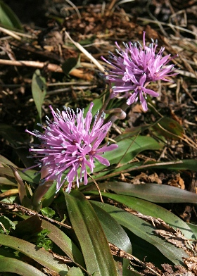

ショウジョウバカマ
基本データ
- 日本名：しょうじょうばかま（猩猩袴）
- 科目 ：ユリ科
- 学名 ：Heloniopsis orientalis
| 生息地 | 道端 | |
| 大きさ | 50～60cm | |
| 花の咲く時期 | 3～5月月 | |
| 花の色 | 紫色 | |
| 花びらの枚数・形 | 6枚 |
ショウジョウバカマの名前は紅色の花を能楽で使う能装束の空想上の「猩々」(オランウータンの意味もある)赤い頭の毛と見立て、花の下の葉を袴と考えたものだと言われています。

| 生息地 | 道端 | |
| 大きさ | 50～60cm | |
| 花の咲く時期 | 3～5月月 | |
| 花の色 | 紫色 | |
| 花びらの枚数・形 | 6枚 |